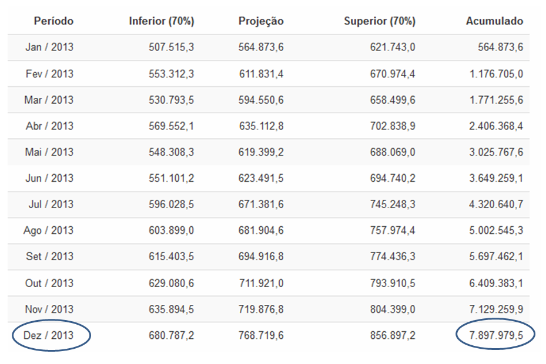
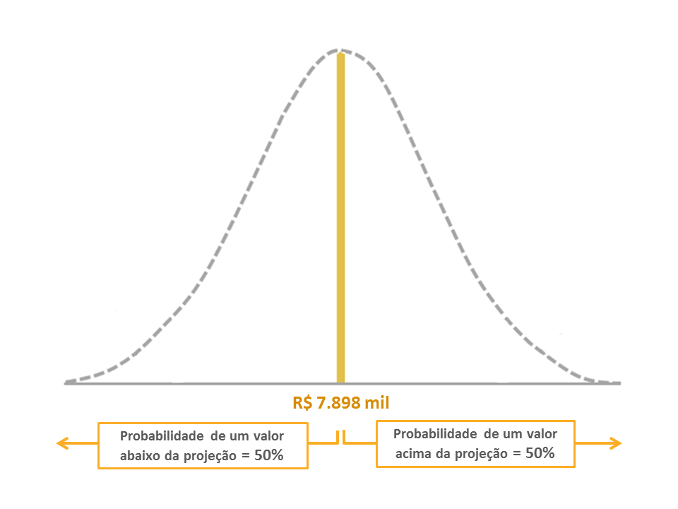
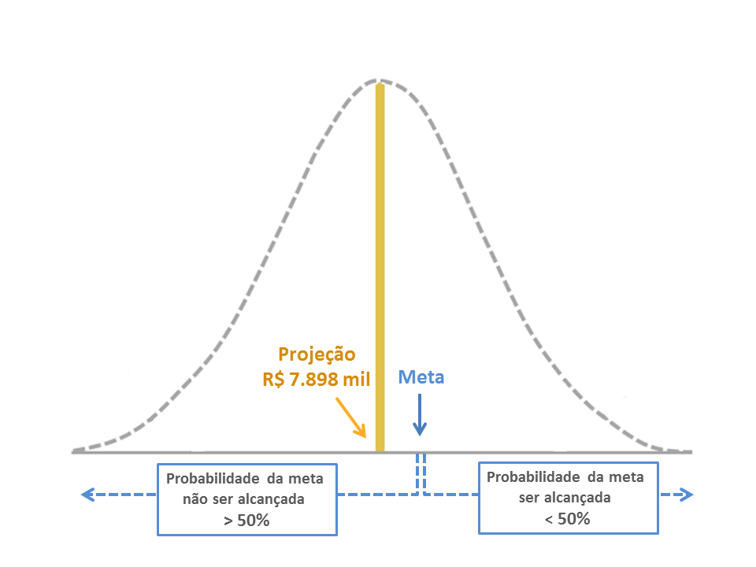
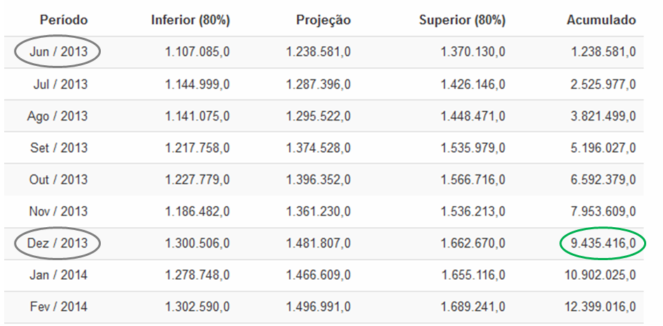

I. Definindo metas de venda
Metas inatingíveis são reconhecidamente desestimulantes para as equipes de venda. Metas muito fáceis de serem alcançadas não capitalizam as oportunidades de crescimento da empresa.
Por essa razão, projeções de venda constituem o ponto de partida ideal para a discussão em torno das metas a serem fixadas, uma vez que:
- Sinalizam o que é mais provável
- Fornecem uma referência imparcial para os objetivos de venda
- Dão “dicas” importantes sobre o grau de dificuldade de se alcançar uma determinada meta.
Vamos ver, através de um exemplo, como a projeção pode ajudar na definição das metas de venda.
Projetando as vendas para o próximo ano
Você imaginar que no final de 2012 a empresa queira definir a meta de vendas de uma dada região para o ano seguinte (2013).
Para isso, é necessário, antes de tudo, projetar as vendas do próximo ano.
Isto pode ser feito carregando-se um arquivo com o histórico de vendas dessa região (últimos 24 ou 36 meses), atualizado até dezembro de 2012.
O Foresee vai gerar uma tabela com as vendas projetadas dessa região para os 12 meses seguintes, ou seja, para o período de janeiro a dezembro de 2013.
A última coluna dessa tabela (Acumulado) totaliza as projeções mês a mês, de forma que examinando o valor acumulado para dezembro de 2013, você vai encontrar o total das vendas projetadas para aquele ano, que na tabela abaixo é de R$ 7.898 mil (ver fig. 1).

Fig. 1
A fig. 2 abaixo representa a projeção das vendas acumuladas para 2013 naquela região como uma distribuição de probabilidade, de forma a facilitar a visualização de alguns pontos importantes que são apresentados a seguir.

Fig. 2
Sabemos que, pelo fato da projeção representar o centro de uma distribuição que contém todos os valores possíveis para as vendas de um determinado período, 50% desses valores possíveis estarão sempre à esquerda da projeção, ou seja, serão menores que a projeção, da mesma maneira que 50% de todos os valores possíveis estarão acima da projeção (veja aqui como interpretar uma projeção).
Metas equivalentes à projeção
Isso nos dá uma primeira indicação importante para a definição de metas.
Quando uma meta é fixada no mesmo valor que as vendas projetadas, a probabilidade dela não ser alcançada ou superada é de 50%, uma vez que 50% dos valores possíveis são menores que a projeção.
Em outras palavras, se você utilizar este mesmo critério - metas iguais ás vendas projetadas - para 10 regiões diferentes, o mais provável é que 50% das regiões (05 regiões) consigam alcançar ou superar suas metas, e 05 regiões terminem o ano abaixo da meta.
Metas inferiores à projeção
Se a meta for fixada abaixo da projeção, a probabilidade dela ser alcançada ou superada é maior que 50%, o que não significa, necessariamente, uma meta fácil de ser atingida. (ver fig. 3).

Fig. 3
Metas superiores à projeção
Se a meta for fixada acima da projeção (fig. 4 abaixo), a chance de ser alcançada ou superada é menor que 50%. Isso quer dizer que se a empresa atuar em 10 regiões, e adotar esse mesmo critério – metas acima da projeção - para todas elas, a probabilidade é de que mais da metade das regiões (06 ou mais) não consigam alcançar seus objetivos de venda.

Fig. 4
Isso não significa, evidentemente, que a empresa não possa fixar metas iguais ou até mesmo maiores que os valores projetados. Mas é importante, nesses casos, que o esforço de vendas - medido pelo número de vendedores, pelos gastos em campanhas, promoções e descontos - seja adequadamente redimensionado, de maneira a assegurar recursos consistentes com a escala do desafio a ser superado.
É mais fácil agir sobre problemas ou oportunidades quando esses são detectados com antecedência.
E o Foresee foi concebido para ajudar sua empresa nessa tarefa, gerando cenários consistentes de venda para os próximos meses e, consequentemente, facilitando uma atuação proativa das áreas de marketing e vendas.
Vamos ilustrar isso com um exemplo. Imagine que ao final de maio de 2013 a "Empresa ABC" queira avaliar a probabilidade de cada uma das 03 regiões que compõem seu mercado alcancarem suas metas de venda até dezembro de 2013.
-
Calculando o saldo de metas a cumprir
Para isso, o primeiro passo consiste em calcular o saldo de metas a cumprir. Esse saldo nada mais é que a diferença entre a meta anual para cada uma das regiões, e o que elas já venderam até o momento, ou seja, até 31/05/2013, nesse exemplo (fig. 5).
|
Região I |
Região II |
Região III |
Total |
| Meta para o ano de 2013 |
12.000.000 |
26.000.000 |
20.000.000 |
58.000.000 |
| Vendas Acumuladas até 05/2013 |
4.389.043 |
10.175.190 |
7.251.164 |
21.815.397 |
| Saldo de Meta a Cumprir |
7.610.957 |
15.824.810 |
12.748.836 |
36.184.603 |
Fig. 5
-
Projetando as vendas para os meses restantes
O passo seguinte consiste em gerar projeções de venda cobrindo o período restante de vigência das metas, ou seja, 06 a 12/2013. Para isso, basta carregar um único arquivo com as vendas mensais das 03 regiões.
Esse arquivo (veja aqui como formatar um arquivo de dados) deve conter um histórico de pelo menos 24 ou 36 meses de venda para cada uma das regiões, de tal forma que a sazonalidade – caso exista – seja corretamente detectada. Além disso, os dados de venda devem estar atualizados, ou seja, devem reportar o valor das vendas até o último mês disponível, nesse exemplo, 05/2013.
Em alguns segundos o Foresee gera os relatórios com as projeções para as 03 regiões, cobrindo o período de 06/2013 a 05/2014 (12 meses).
A projeção acumulada para o período que nos interessa – que se estende de 06 a 12/2013 - pode ser facilmente obtida examinando-se a última coluna à direita da tabela de projeções (Acumulado) na linha Dez/2013.
A figura 6 abaixo apresenta a tabela com as projeções de venda para a Região I, onde podemos observar que o valor acumulado para os meses de 06 a 12/2013 nessa região é de R$ 9.435 mil.

Fig. 6
-
Identificando déficits ou superávits de venda
O último passo consiste em encontrar a diferença entre as vendas projetadas e o saldo de meta a cumprir em cada uma das 03 regiões, o que vai nos indicar onde existem déficits ou superávits projetados de venda:
- Déficit Projetado: Indica que a probabilidade da meta ser alcançada é menor que 50% (é mais provável que a meta não seja alcançada).
- Superávit Projetado: Indica que a probabilidade da meta ser alcançada é maior que 50% (é mais provável que a meta seja alcançada).
A tabela abaixo (figura 7) apresenta este cálculo para as 03 regiões, e também sua consolidação para a empresa como um todo:
| Região I |
Região II |
Região III |
Total |
| Saldo de Meta a Cumprir até 12/2012 |
7.610.957 |
15.824.810 |
12.748.836 |
36.184.603 |
| Vendas Projetadas para 06 a 12/2013 |
9.435.416 |
16.948.106 |
10.769.164 |
37.152.686 |
| Déficit ou Superávit Projetado |
1.824.459 |
1.123.296 |
-1.979.672 |
968.083 |
Fig. 7
A comparação das vendas projetadas com o saldo de metas a cumprir indica que:
O total de vendas projetado para as 03 regiões no período 06 a 12/2013 (R$ 37.153 mil) é superior ao saldo de metas a cumprir (R$ 36.185 mil).
Isso nos mostra que a probabilidade da empresa alcançar sua meta total de vendas é maior que 50%, ou seja, o resultado mais provável é que ela consiga atingir seus objetivos.
Contudo, é importante notar que o superávit projetado (R$ 968 mil) representa apenas 2,7% do saldo total da meta a cumprir (R$ 36.184 mil), ou seja, a “folga” existente entre as vendas projetadas e o saldo de meta a cumprir é relativamente pequena.
- A região I apresenta um superávit projetado de R$ 1.824 mil, equivalente a 24% do seu saldo de meta a cumprir, o que significa uma “folga” bastante expressiva.
- A região II mostra também um superávit (R$ 1.123 mil), o qual, entretanto, representa apenas 7% do seu saldo de meta a cumprir. A probabilidade da região II alcançar ou superar sua meta é maior que 50%, mas sua situação não é tão tranquila quanto à da região I.
- A região III apresenta um déficit projetado de vendas de quase R$ 2 milhões (-15% do saldo de meta a cumprir), indicando um “gargalo” importante que deverá ser objeto de atenção das áreas de vendas e marketing ao longo dos próximos meses.
Esse monitoramento deve ser revisto mensalmente, com projeções atualizadas, de forma que o impacto de mudanças no mercado sobre a execução das metas possa ser prontamente avaliado pela empresa.
É importante lembrar que esse mesmo tipo de análise pode ser estendido a produtos, equipes de venda ou canais de distribuição, desde que a empresa tenha definido objetivos quantitativos para cada uma dessas “dimensões” de suas vendas.